Parameters - Lookup
Lookup Parameters - FROM ACCOUNT … TO ACCOUNT
|
|
It s recommended that you create a copy of the existing report before adding parameters. If something goes wrong you can revert back to your original report. In the Report man screen, select your report and click on the Copy report button. |

If you already added a parameter or wish to move or resize parameters, to align them with other reports, you may wish to resize the layout of the parameter selection fields.
It is a good idea to note the position (i.e. Left and Top), and the size properties (i.e. Length, Width, Height and size) of other report parameters.
Add lookup parameters
On the copy of your report, click on the Print preview button to print some data on screen.
Click on the Parameters button.
The Lookup parameters will launch the lookup for the selected account type. On the lookup you may select a specific account or a range of accounts to be included in your report.
To do this, you need to create (add) two (2) parameters.
- From account
- To account
Once the Lookup parameter is added, you need to add some basic SQL to the report to add the functionality to the report.
In this example, the Debtors lookup will be added.
Add From account parameter
To add the lookup parameters:
- On the "Report man" screen, select your report and click on the Parameters button.

- On the parameters screen for your report, click on the Add button.
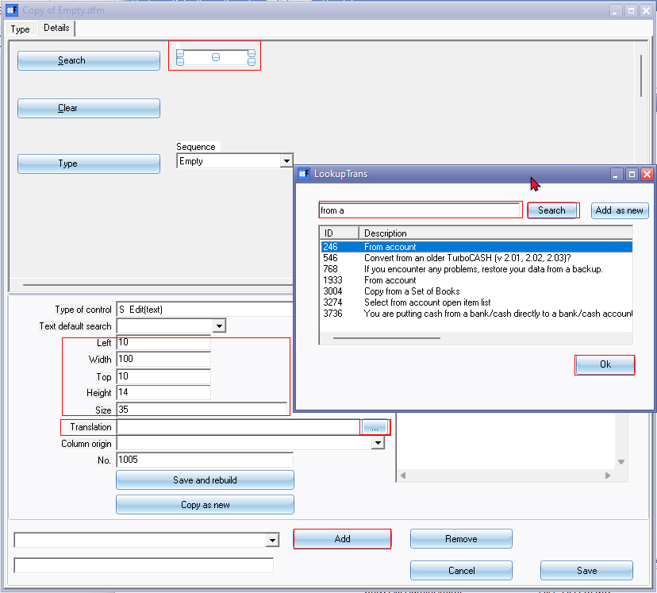
- Select the options as follows:
- Size and position - Enter the values for the Left, Width, Top and Height properties to position your parameter.
- Translation - Click on the ... icon and search for the language label. Select your label (in this example, "From account" is selected) and click Ok.
- Click on the Save and rebuild button. This will position the new parameter and add the translation on the Parameter screen.
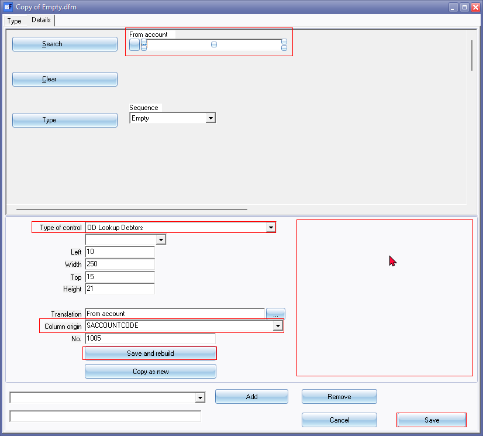
- Enter the following options:
- Type of control - Select "OD Lookup Debtors".
- Size and position - Check and edit the values for the Left, Width, Top and Height properties to position your parameter, if necessary.
- Column origin - To link the account code, you need to assign a valid column (database field) SACCOUNTCODE.
|
|
Note the SQL field is not available at this stage. |

- Click on the Save and rebuild button.
- Click on the Save button to save your parameter and to close exit the parameters screen.
|
|
If you do not click on the Save button, your parameter or any changes to the parameter will be discarded (lost). |
- Reopen the parameters screen.
- Click on the "From account" parameter. The SQL area will be added to the parameters.
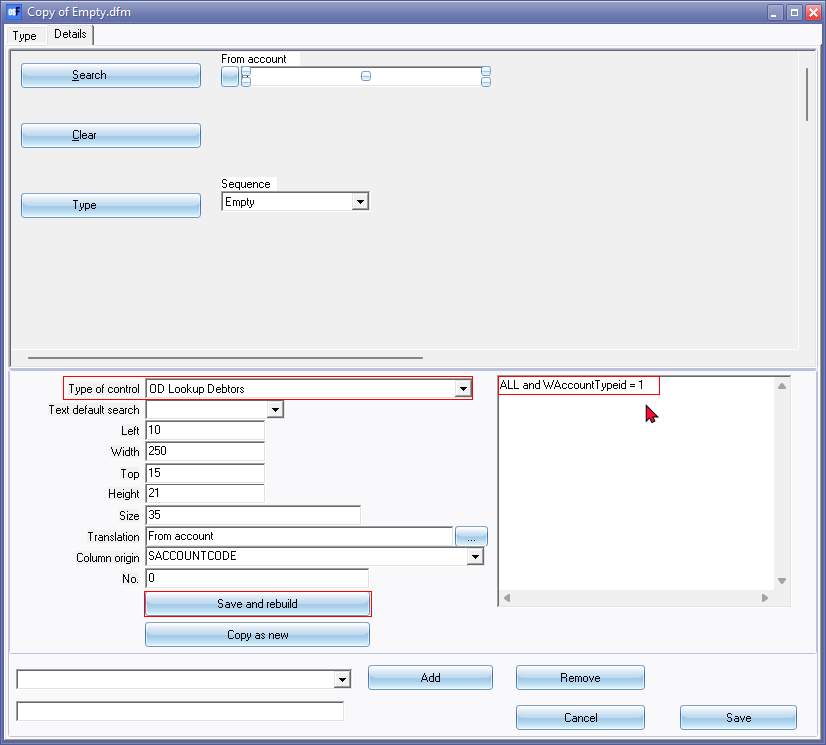
- Enter the following SQL:
“ALL and WAccountTypeid = 1”
|
|
All needs to be in the UPPERCASE (i.e. “ALL and WAccountTypeid = 1”). If "All" is in the lower case (i.e. “All and WAccountTypeid = 1”), the lookup will produce the following error: "Dynamic SQL Error |
- Click on the Save and rebuild button.
- You may proceed to add the "To account" parameter.
|
|
If you need to exit the parameters screen at this stage, click on the Save button. If you do not click on the Save button, your parameter or any changes to the parameter will be discarded (lost). |
Add To account parameter
To add the lookup parameters:
- On the parameters screen for your report, click on the Add button.
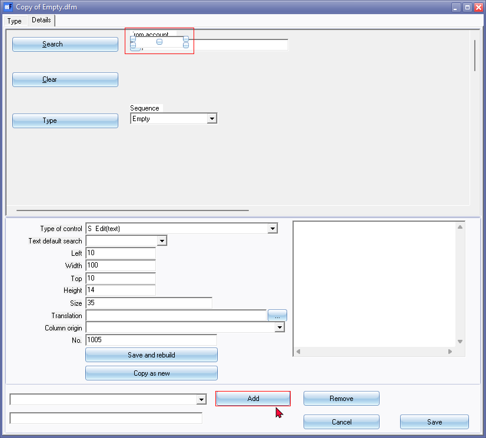
- Select and or enter the options for the "To account" parameter.
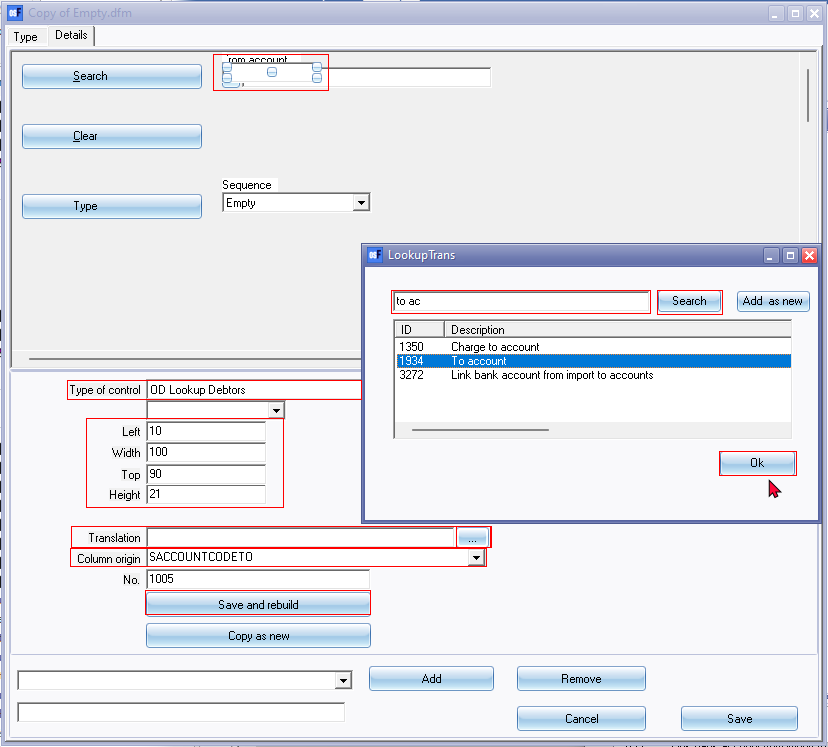
- Select the options as follows:
- Type of control - Select "OD Lookup Debtors".
- Size and position - Enter the values for the Left, Width, Top and Height and Size properties to position your parameter.
- Translation - Click on the ... icon and search for the language label. Select your label (in this example, "To account" is selected) and click Ok.
- Column origin - To link the account code, you need to assign a valid column (database field) SACCOUNTCODETO.
|
|
Note the SQL field is not available at this stage. |
- Click on the Save and rebuild button. This will position the new parameter and add the translation on the parameter screen.
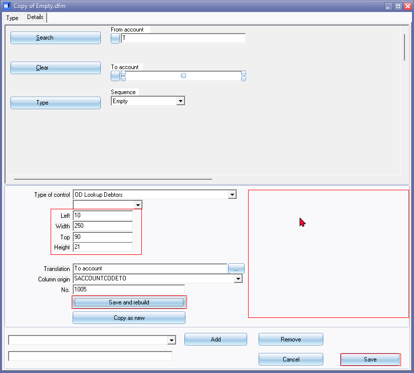
- Click on the Save button to save your parameter and to close exit the parameters screen.
|
|
If you do not click on the Save button, your parameter or any changes to the parameter will be discarded (lost). |
- Reopen the parameters screen.
- Click on the "To account" parameter. The SQL area will be added to the parameters.
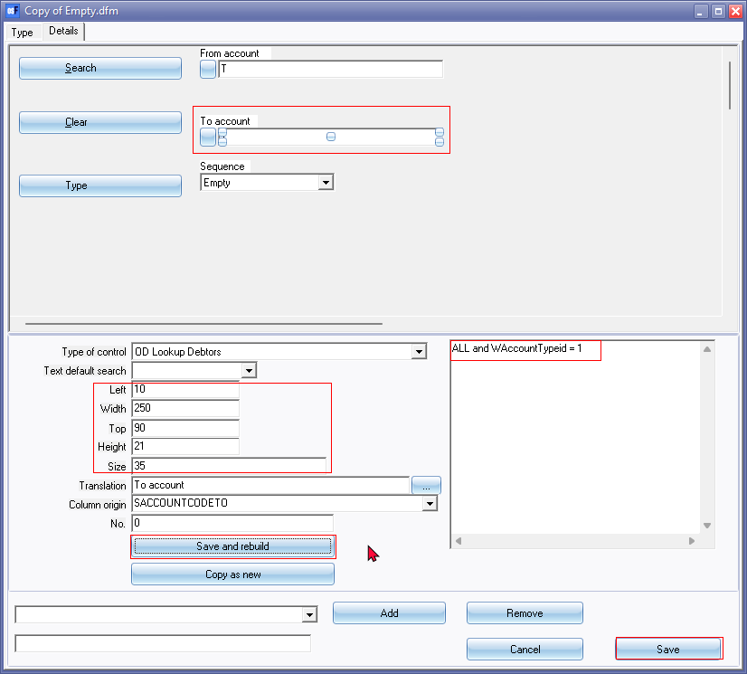
- Enter the following SQL:
“ALL and WAccountTypeid = 1”
|
|
All needs to be in the UPPERCASE (i.e. “ALL and WAccountTypeid = 1”). If "All" is in the lower case (i.e. “All and WAccountTypeid = 1”), the lookup will produce the following error: "Dynamic SQL Error |
- Click on the Save and rebuild button.
- Click the Save button. This will save and close the report parameter design screen.
|
|
If you do not click on the Save button, your parameter or any changes to the parameter will be discarded (lost). |
|
|
The Parameters are available on the Parameters screen but will not work at this stage. You need to add the parameters and some SQL to the report. You will still be able to preview the report at this stage without using the lookup parameters. |

Add lookup parameters to reports
Add lookup (From account and To account) parameters to report
You basically need tot add the following parameters to the report parameters:
From account parameters
|
Parameter |
Data type |
Sets this parameter to |
Data |
|
SACCOUNTCODE |
String |
|
Account id |
|
SACCOUNTCODETX |
String Substitute |
@SACCOUNTCODETX |
Account code |
To account parameters
|
Parameter |
Data type |
Sets this parameter to |
Data |
|
SACCOUNTCODETO |
String |
|
Account id |
|
SACCOUNTCODETOTX |
String Substitute |
@SACCOUNTCODETOTX |
Account code |
Add From account (SACCOUNTCODE) String parameter
To add the From account string parameter to the report:
- On the "Report man" screen, select your report and click on the Edit button. (You may also double-click on your report).
- On the "Database and connections datasets" screen (accessed from the first icon or from the Report → Data access configuration menu), click the Parameters button.
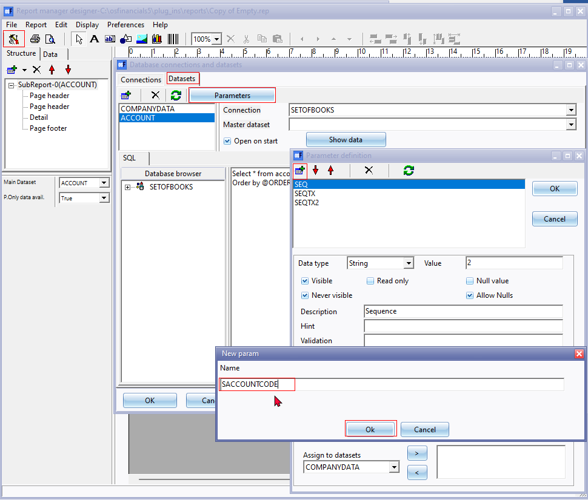
- On the "Parameter definition" screen, select the "ACCOUNT" dataset and click on the Add icon.
- On the "New param" screen, enter "SACCOUNTCODE".
|
|
The name if this parameter must be entered exactly as entered in the "Column origin" field for the "From account" parameter (i.e. "SACCOUNTCODE") on the parameter design screen. |
- Click Ok. This will add the parameter.
- Select the "SACCOUNTCODE" parameter.
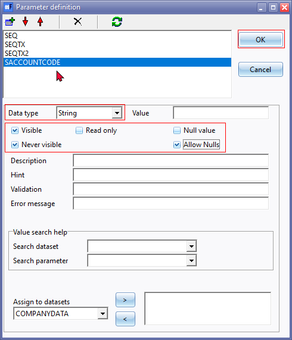
- On the "SACCOUNTCODE" parameter, select and configure the options as follows:
- Data type - Select "String".
- Properties - "Visible" and "Never visible" as well as "Allow Nulls" fields may be ticked. The other options may be left blank.
- Description - Enter a description ("From account" as per this example).
- You may proceed to add the String substitute parameter ("SACCOUNTCODETX") for the "From account" lookup parameter.
|
|
Should you wish to add the next parameter at a later stage, you need to click OK on both the "Parameter definition" as well as the "Database connections and datasets" screens. If you do not click on the OK button of the "Database connections and datasets" screen, your parameter or any changes to the parameter will be discarded (lost). |
Add From account (SACCOUNTCODETX) String Substitute parameter
To add the From account string parameter to the report:
- On the "Report man" screen, select your report and click on the Edit button. (You may also double-click on your report).
- On the "Database and connections datasets" screen (accessed from the first icon or from the Report → Data access configuration menu), click the Parameters button.
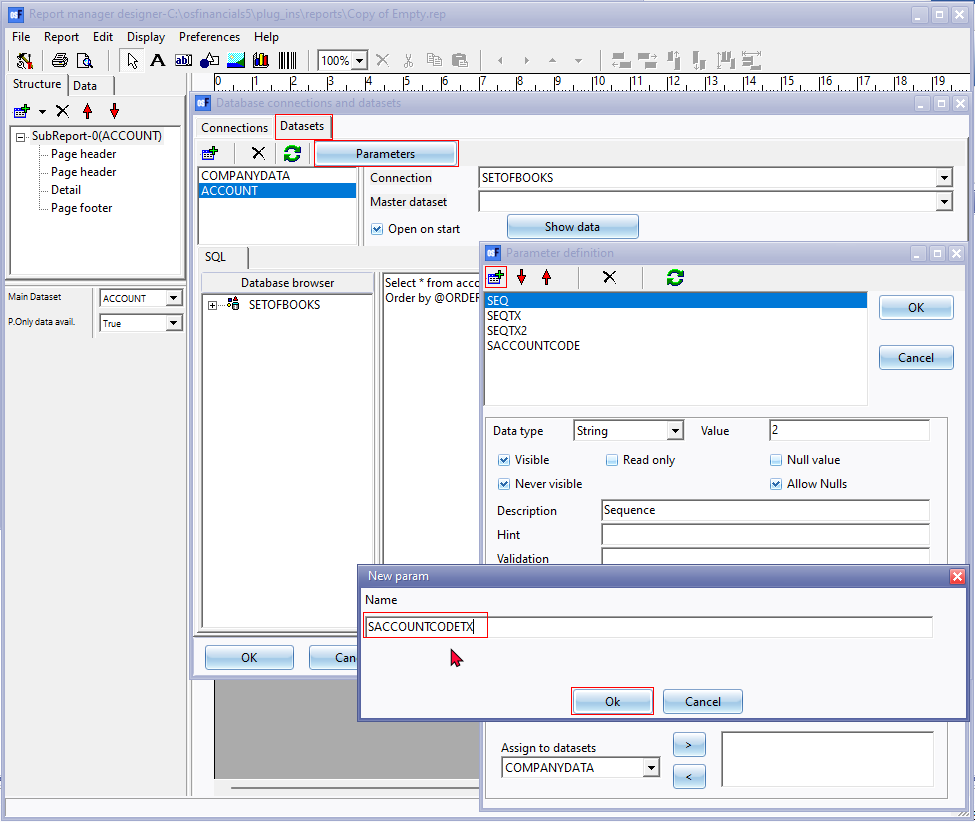
- On the "Parameter definition" screen, select the "ACCOUNT" dataset and click on the Add icon.
- On the "New param" screen, enter "SACCOUNTCODETX".
- Click Ok. This will add the parameter.
- Select the "SACCOUNTCODETX" parameter.
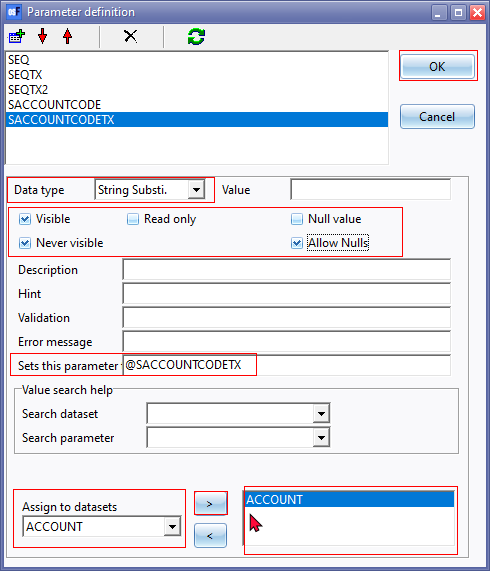
- On the "SACCOUNTCODETX" parameter, select and configure the options as follows:
- Data type - Select "String Substi" (String substitute).
- Properties - "Visible" and "Never visible" as well as "Allow Nulls" fields may be ticked. The other options may be left blank.
- Description - Enter a description ("From account" as per this example).
- Sets this parameter to - Enter “@SACCOUNTCODETX”.
- Assign to datasets – Select the ACCOUNT dataset and click on the > icon.
- You may proceed to add the "To account" lookup parameters.
|
|
Should you wish to add the next parameter at a later stage, you need to click OK on both the "Parameter definition" as well as the "Database connections and datasets" screens. If you do not click on the OK button of the "Database connections and datasets" screen, your parameter or any changes to the parameter will be discarded (lost). |
Add To Account (SACCOUNTCODETO) String parameter
To add the To account string parameter to the report:
- On the "Report man" screen, select your report and click on the Edit button. (You may also double-click on your report).
- On the "Database and connections datasets" screen (accessed from the first icon or from the Report → Data access configuration menu), click the Parameters button.
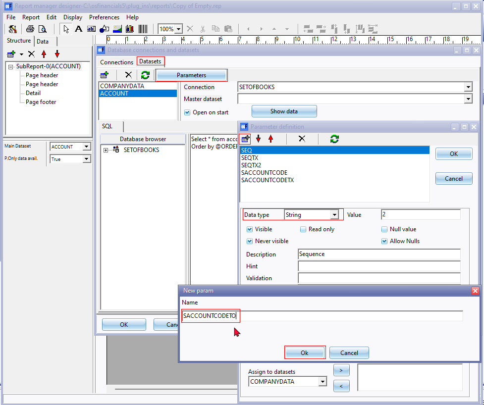
- On the "Parameter definition" screen, select the "ACCOUNT" dataset and click on the Add icon.
- On the "New param" screen, enter "SACCOUNTCODETO".
|
|
The name if this parameter must be entered exactly as entered in the "Column origin" field for the "To account" parameter (i.e. "SACCOUNTCODETO") on the parameter design screen. |
- Click Ok. This will add the parameter.
- Select the "SACCOUNTCODETO" parameter.
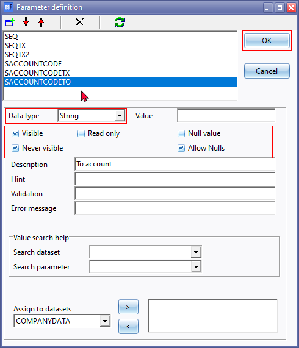
- On the "SACCOUNTCODETO" parameter, select and configure the options as follows:
- Data type - Select "String".
- Properties - "Visible" and "Never visible" as well as "Allow Nulls" fields may be ticked. The other options may be left blank.
- Description - Enter a description ("To account" as per this example).
- You may proceed to add the String substitute parameter ("SACCOUNTCODETOTX") for the "From account" lookup parameter.
|
|
Should you wish to add the next parameter at a later stage, you need to click OK on both the "Parameter definition" as well as the "Database connections and datasets" screens. If you do not click on the OK button of the "Database connections and datasets" screen, your parameter or any changes to the parameter will be discarded (lost). |
Add To account (SACCOUNTCODETX) String Substitute parameter
To add the To account string parameter to the report:
- On the "Report man" screen, select your report and click on the Edit button. (You may also double-click on your report).
- On the "Database and connections datasets" screen (accessed from the first icon or from the Report → Data access configuration menu), click the Parameters button.
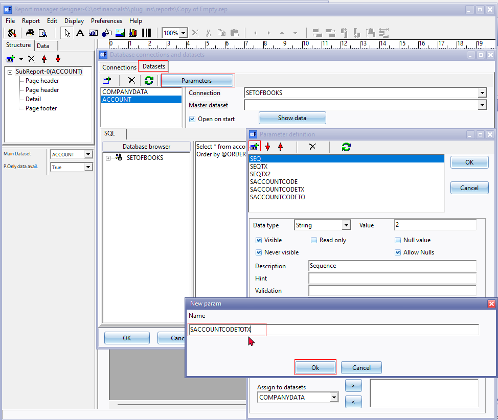
- On the "Parameter definition" screen, select the "ACCOUNT" dataset and click on the Add icon.
- On the "New param" screen, enter "SACCOUNTCODETOTX".
- Click Ok. This will add the parameter.
- Select the "SACCOUNTCODETOTX" parameter.
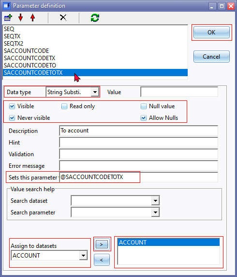
- On the "SACCOUNTCODETOTX" parameter, select and configure the options as follows:
- Data type - Select "String Substi" (String substitute).
- Properties - "Visible" and "Never visible" as well as "Allow Nulls" fields may be ticked. The other options may be left blank.
- Description - Enter a description ("To account" as per this example).
- Sets this parameter to - Enter “@SACCOUNTCODETOTX”.
- Assign to datasets – Select the "ACCOUNT" dataset and click on the > icon.
- You may proceed to add the "To account" lookup parameters to the report.
|
|
Should you wish to add the next parameter at a later stage, you need to click OK on both the "Parameter definition" as well as the "Database connections and datasets" screens. If you do not click on the OK button of the "Database connections and datasets" screen, your parameter or any changes to the parameter will be discarded (lost). |
Add From ... To account lookup parameters SQL to the report
After adding the parameters to the report dataset, you need to add the SQL to the dataset (e.g. "ACCOUNT").
- On the "Database and connections datasets" screen (accessed from the first icon or from the Report → Data access configuration menu), click the Parameters button.
- On the Database connections and datasets screen, select the "ACCOUNT" dataset and add the SQL for the Account lookup.
|
|
MSSQL - SQL not supported in Previous documentation before osFinancials5.1 “and SAccountcode <= trim(substring('@SACCOUNTCODETOTX ' from 2 for {if mysql}if{else}IIF{endif}(position (' ' in '@SACCOUNTCODETOTX ')=0,0,position (' ' in '@SACCOUNTCODETOTX ')-1)) ) |
To include support for MSSQL Server for the lookup feature, it is recommended that the following SQL is added to the "ACCOUNT" dataset:
and SAccountcode <= trim(substring('@SACCOUNTCODETOTX ' {ssfrom} 2 {ssfor} {iif}
({pos} (' ' {posin} '@SACCOUNTCODETOTX ')=0,0,{pos} (' ' {posin} '@SACCOUNTCODETOTX ')-1)) )
and SAccountcode >= trim(substring('@SACCOUNTCODETX ' {ssfrom} 2 {ssfor}
IIF ({pos} (' ' {posin} '@SACCOUNTCODETX ')=0,0,{pos} (' ' {posin} '@SACCOUNTCODETX ')-1)))
- On the Database connections and datasets screen, select the "ACCOUNT" dataset and add the above SQL:
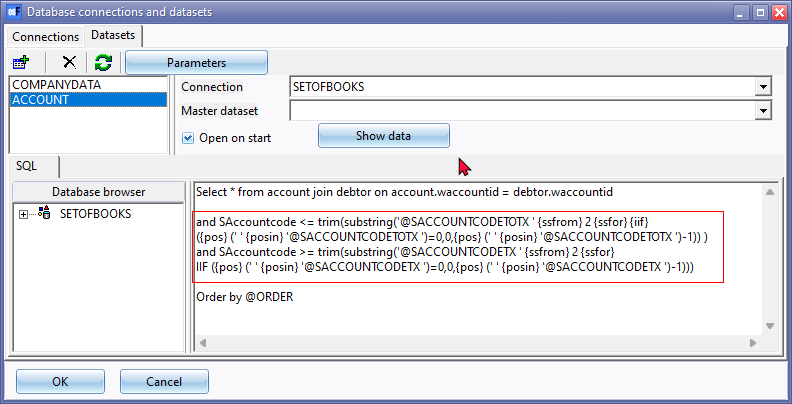
|
|
This must be added before the Order by SQL. “Order by @ORDER” |
|
|
NOTE - The Show data button will not display any data at this stage. You need to click on the OK button and close (exit) the report. If you click on the Print preview icon on the Report manager designer screen, the data will also not be available to print. An error message will be displayed: "No data available to print!" You need to click on the Print preview button and select the From account … To Account lookups from the parameter screen and click OK. |
- Click on the OK button of the "Database connections and datasets" screen.
|
|
If you do not click on the OK button of the "Database connections and datasets" screen, your parameter or any changes to the parameter will be discarded (lost). |
- Close the report and Save the report.
|
|
If you do not click on the Save button, your parameter or any changes to the parameter will be discarded (lost). |
Test / Print the new report with the From account and To account parameter
The report should print all accounts From account … To account (according to your selection on the Parameter screen). If you have selected the same Debtor account in the From account and the same Debtor account in the To account lookup, only the data of the selected Debtor account should be included in the report.
To test and preview the lookup parameters:
- On the "Report man" screen, select your report, and click the Print preview button.
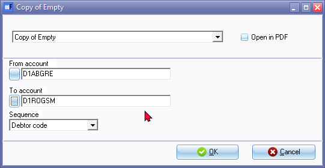
- Select the accounts to include in the report the From account … To Account lookup screens.
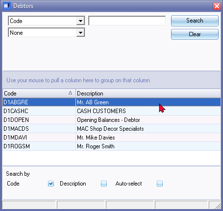
- Select the "Sequence" (i.e. Debtor code or Description) if not correct.
- Click on the OK button of the "Report options" screen. An example of the printed report, is as follows:
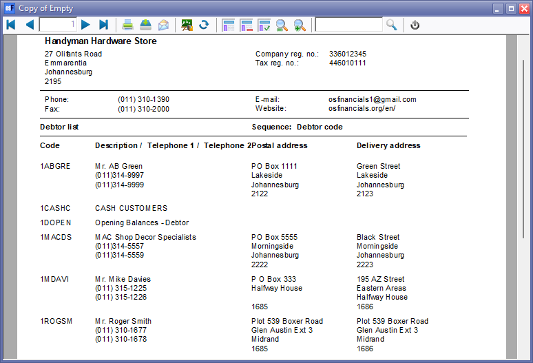
|
|
You may wish to add the "From account ... To account" selection to print on the report (similar to the "Sequence" parameter option). |

Add From account … To Account parameters to the printout
The From account and To account parameters allow you to print the report for all debtor accounts, a selected range of Debtor accounts or a specific debtor account as per your selection on the report parameter. It is a good idea to add the parameter selection on the report printout.
A user will exactly read on the report page headers in which which account or accounts are included in the report.
|
|
Refer to the section - Reportman - Translatable label expressions in this document. |

To add the lookup parameters to the report print:
- On the "Report man" screen, select your report, and click the Edit button (You may also double-click on the selected report).
- Select the second Page header in the report structure.
- Select the Expression icon to insert a basic expression. The default expression is “2+2”.
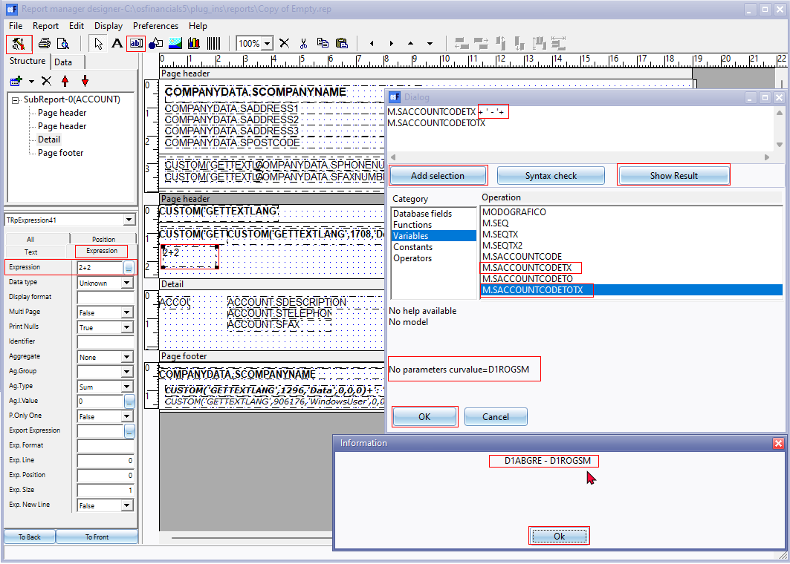
- On the Expression tab, click on the ... icon to edit the expression.
- Select the "Variables" in the "Category" section.
|
|
These Variables is automatically added when adding parameters Datasets.
|
- Remove the default "2+2" SQL in the expression.
- Select the M.SACCOUNTCODETX string substitute ("From account") parameter and click on the Add selection button (or double-click on the selected operator) to add the operator to the SQL section.
- Select the M.SACCOUNTCODETOTX string substitute ("To account") parameter and click on the Add selection button (or double-click on the selected operator) to add the operator to the SQL section.
- Join these two variables by typing the + ' - '+ after the first variable (This will insert a space and a hyphen followed by a space). The expression should be as follows:
M.SACCOUNTCODETX + ' - '+
M.SACCOUNTCODETOTX
- Click on the Show Result button to check if it is displayed correctly. The "From account" and the "To account" to will display correctly on the "Information" screen according to your previous selection on the Report options.
- Click Ok on the "Information" screen and OK on the "Dialog" screen to save the expression.
Add labels for From account … To Account parameters to the printout
At this stage, only the Account codes will be printed on the report. To describe these codes on the printed report, you need to add labels.
Add labels to the From account and To account expressions:
- On the "Report man" screen, select your report, and click the Edit button (You may also double-click on the selected report).
- Select the "M.SACCOUNTCODETX" expression and click on the Expression tab to edit the expression.
- On the Expression tab, click on the ... icon to edit the expression.
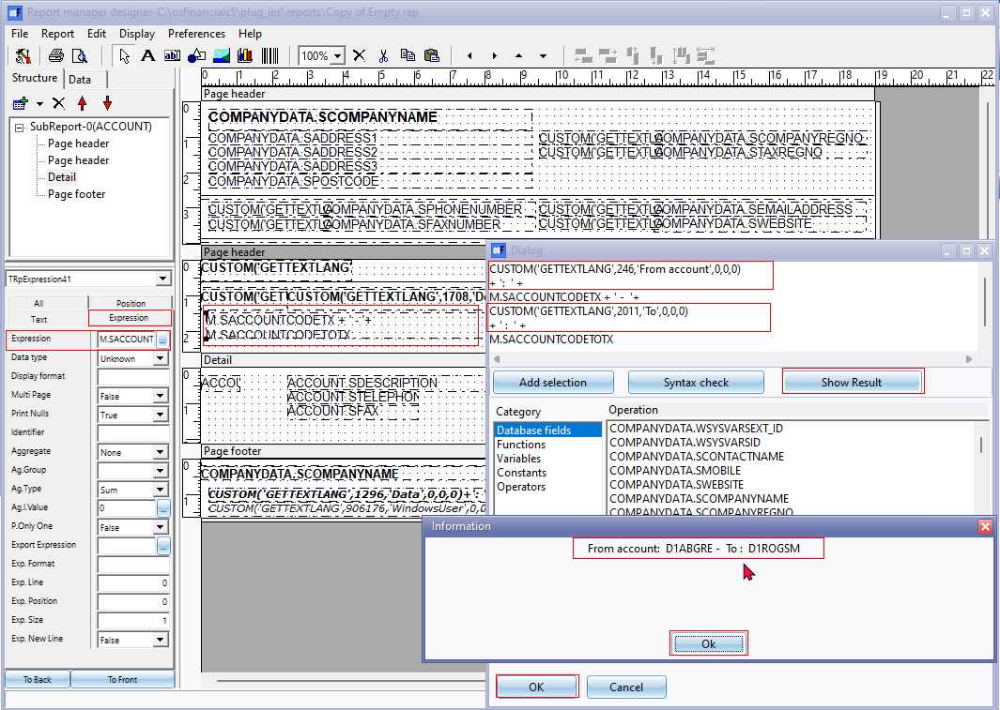
|
|
The required label id's from the Language files were already selected (in the "Translation" field) when the Parameters were designed:
|
- Add a label From account : (translatable language id 246 and description).
- Add a label To account : (translatable language id 2011 and description). The completed Sql for the From and To account is as follows:
CUSTOM('GETTEXTLANG',246,'From account',0,0,0)
+ ': ' +
M.SACCOUNTCODETX + ' - '+
CUSTOM('GETTEXTLANG',2011,'To',0,0,0)
+ ' : ' +
M.SACCOUNTCODETOTX
- Click on the Show Result button.
|
|
Take note the spaces of the colon on the "Information" screen. From account: (no space) and To : includes a space. You may decide to add a space after From account : or to remove the space after To : |
- Click OK on the "Information" and the "Dialog" screens.
- Click on the Print preview icon to preview the report. The Debtor accounts selected in the report parameters will display your selection on the report printout.
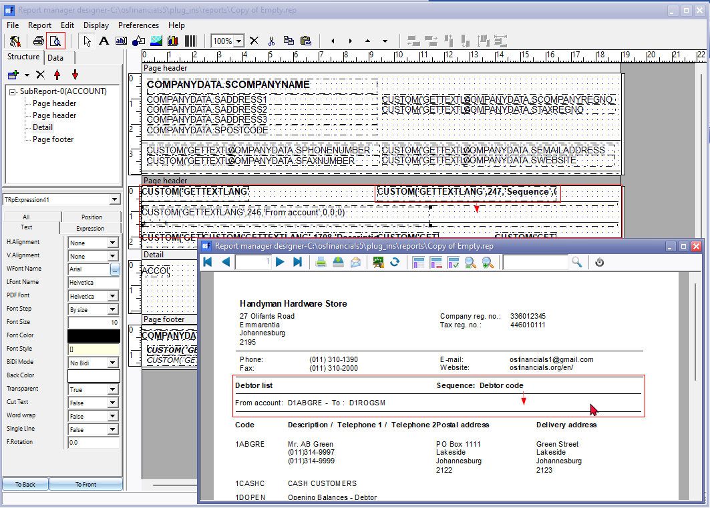
|
|
You may wish to :
|
- Close the "Print preview" screen.
- Add the necessary touches to tidy the report layout.
- Click on the Print preview icon to preview the report.
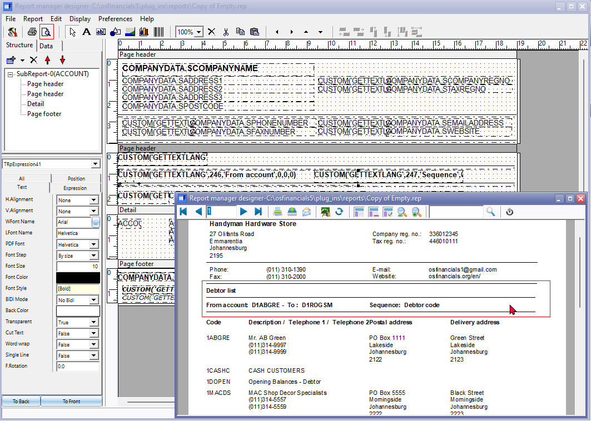
- Close the "Print preview" screen.
- Close the "Report manager designer" screen. Remember to Save the report.
|
|
Whenever you close the "Report manager designer" screen, after editing your report, remember save the report. If you click on No, on the "Save report?" confirmation message, your changes will be discarded (lost). |